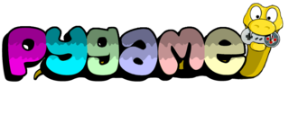
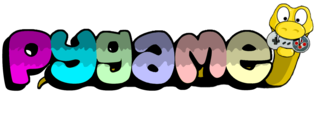

Pygame est une libraire python libre. Elle aide pour la programmation de jeux vidéos. Pygame possède des outils pour gérer les images,
les sons, les collisions, les évènements ainsi que l'interface graphique. Sur cette page web, vous apprendrez vous-même à créer votre propre jeu vidéo. Excitant, n'est-ce pas ? Alors, n'attendons plus et plongeons droit dans l'univers fantastique de Pygame.
Et voilà ! Nous venons d'utiliser notre toute première fonction de Pygame : init(). Cette fonction ne fait rien en apparence mais elle est indispensable car elle permet d'initialiser pygame. Oublier init() empêchera certaines fonctionnalités de Pygame de fonctionner. Aussi, je ne l'ai pas mentionné mais je pars du principe que vous possédez un minimum de connaissances sur Python. Si vous savez utilser les boucles ainsi que les conditions, définir une fonction, gérer les variables, et peut-être également quelques notions de POO (Programmation Orientée Objet), alors je vous encourage à suivre votre curiosité. Autrement, vous risqueriez de ne pas comprendre le contenu de ce site et dans ce cas-là, je vous encourage à suivre votre bon sens et vous renseigner sur le langage Python.

Avertissement
La première chose à noter est que pygame n'est pas un moteur de jeu ("game engine" en anglais), contrairement à Unity, Godot ou encore Unreal. Pygame permet donc de créer des jeux vidéos assez simple en 2D, alors ne vous attendez pas à programmer un Zelda Breath of the Wild ou un Assassin's creed. Vous pouvez en revanche vous attendre à programmer des jeux tels que Pong, Breakout, le T-rex de Google, ou bien les premiers jeux Mario Bros.Pourquoi Pygame ?
Pourquoi ne pas tout simplement apprendre comment utiliser un moteur de jeu ? La raison est simple. Pygame est super facile à apprendre ! Pygame est "beginner-friendly", contrairement aux moteurs de jeu qui nécessitent des techniques avancées et qui leur sont exclusives. Ce qui m'amène à la seconde raison : Pygame nous aidera à être plus confortable avec le langage Python et la programmation en général, alors qu'un moteur de jeu comme Unity nous renfermerait sur comment utiliser celui-çi et pas un autre. Apprendre Pygame nous procurera les bases de la programmation et du jeu vidéo, ce qui rendra l'éventuel apprentissage d'un moteur de jeu moins difficile que dans le cas contraire. Avec Pygame, on apprend Python. Avec Python, on crée des jeux vidéos, résoud des problèmes mathématiques, développe des algorithmes et fait même naître des intelligences artificielles. Avec un moteur jeu, on crée des jeux vidéos. Et avec des jeux vidéos, on joue. Tout est question de flexibilité.Qu'est-ce qu'un jeu vidéo ?
Un jeu vidéo, c'est quoi ? C'est un terme qui contient le mot "jeu" et le mot "vidéo". La définition du mot "jeu" reste cependant assez vague alors nous allons définir le jeu comme une activité divertissante sur laquelle le ou les joueurs possèdent du pouvoir mais selon des règles précises. Mais intéressons-nous plutôt à la définition de "vidéo". Une vidéo est une suite rapide d'images qui s'enchaîne les unes après les autres, donnant l'impression que le tout est vivant. On peut appeler chaque image d'une vidéo "frame" et il faut savoir qu'on mesure la vitesse d'une vidéo en FPS ("Frame Per Second", ce qui veut littéralement dire le nombre d'images dessinées chaque seconde). Un jeu vidéo est par conséquent la combinaisons de ces deux concepts. C'est une vidéo, mais une vidéo avec laquelle un joueur peut interagir. Les actions du joueur déterminent la prochaine frame à dessiner pour un jeu vidéo, tandis que la suite d'images d'une vidéo est fixe, elle ne change pas.Prérequis
Pour utiliser pygame, il faut avoir installé Python sur son ordinateur. Si ce n'est pas déjà fait, il est hautement conseillé de télécharger Python à partir de son site officiel : www.python.org car non seulement Python sera installé, mais quelques outils qui le sont indispensables seront fournis avec (et notamment pip). Evidemment, pour utiliser Pygame, il faut avoir installé Pygame. Pour cela, nous utiliserons pip et taperons la commande 'pip install pygame' depuis un terminal. Cela fait, il ne reste plus qu'à ouvrir votre IDE favori (personnellement j'utilise VS Code et Pycharm), créer un fichier python ".py" puis importer le module pygame.Et voilà ! Nous venons d'utiliser notre toute première fonction de Pygame : init(). Cette fonction ne fait rien en apparence mais elle est indispensable car elle permet d'initialiser pygame. Oublier init() empêchera certaines fonctionnalités de Pygame de fonctionner. Aussi, je ne l'ai pas mentionné mais je pars du principe que vous possédez un minimum de connaissances sur Python. Si vous savez utilser les boucles ainsi que les conditions, définir une fonction, gérer les variables, et peut-être également quelques notions de POO (Programmation Orientée Objet), alors je vous encourage à suivre votre curiosité. Autrement, vous risqueriez de ne pas comprendre le contenu de ce site et dans ce cas-là, je vous encourage à suivre votre bon sens et vous renseigner sur le langage Python.
1... 2... 3... Codez !
Nous sommes donc enfin prêts à découvrir Pygame. Nous débuterons par aborder la structure et le fonctionnement général du module. Puis nous parlerons de ses différentes fonctionnalités : les rectangles, les images (alias surfaces), les sons, les évènements, les collisions, la classe Sprite, etc. Nous concluerons par des exemples de projet Pygame faits par la classe de NSI du lycée Mémona Hintermann-Afféjee. Attention, prêts ? Codez !